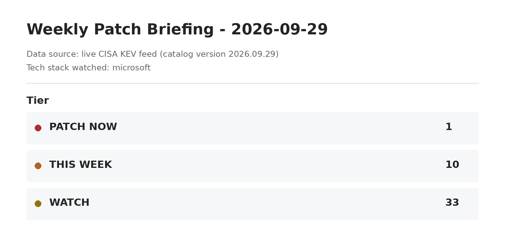
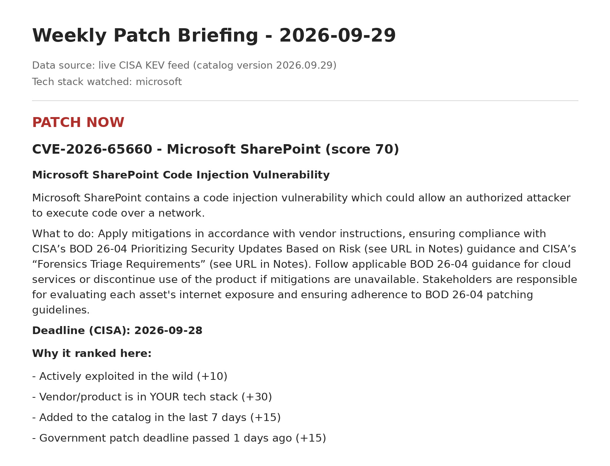
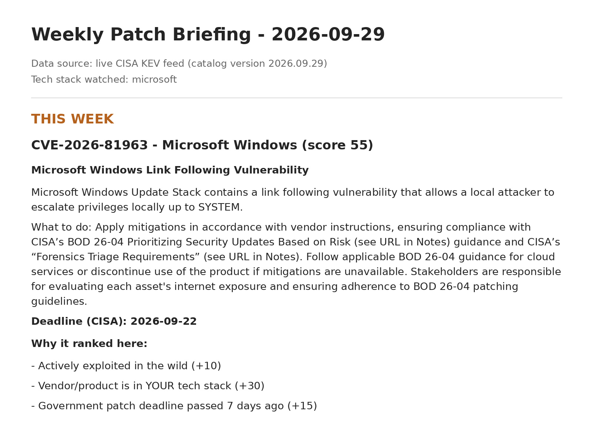

PatchTeam
An explainable vulnerability-prioritization workflow.
PatchTeam turns CISA’s public Known Exploited Vulnerabilities catalog into a readable patch-priority briefing. Four specialized Python agents collect the data, score recent entries, review the decisions, and produce a Markdown report tailored to a configured software watchlist.
Each recommendation includes the rules behind its score: a vendor or product match, known ransomware use, a recent catalog addition, and the CISA due date. The report groups findings into Patch Now, This Week, and Watch, making the decision process easy to inspect.
Fetch the KEV feed; attempt cache and sample fallbacks. 02 · Triage
Score entries within the configured lookback window. 03 · Reviewer
Remove duplicate CVEs and apply relevance rules. 04 · Reporter
Write a dated briefing and latest.md.
main.pyruns the four agents in order. A shared state dictionary carries the configuration, findings, decisions, and report path.config.jsondefines the software watchlist, lookback window, and maximum entries displayed per tier.agents.pycontains collection, a score capped at 100, duplicate removal, tier assignment, and report generation.- The core workflow uses explicit Python rules. An optional external AI summary can add prose without deciding the scores or tiers.
Scoring, review rules, and practical limits
Scoring starts at 10 for a KEV entry. A watchlist match adds 30, known ransomware use adds 40, and addition within seven days adds 15. A passed CISA due date adds 15; a due date within seven days adds 10. The final score is capped at 100.
Scores of 60 or more enter Patch Now; 40–59 enter This Week; lower scores enter Watch. The Reviewer moves out-of-watchlist Patch Now entries to This Week and includes a note explaining the change.
This is a rule-based agent workflow with optional AI-assisted reporting. Watchlist matching uses text substrings, so it does not verify installed software versions or actual exposure. The lookback window excludes older catalog entries; the briefing is a focused review, rather than a complete vulnerability inventory.
CISA dates are catalog reference dates, not a custom deadline for every reader. A person still needs to verify applicability and remediation guidance before acting.
Each agent reads the current state, adds its results, and passes the state to the next agent. This keeps collection, prioritization, review, and reporting in separate components.
agents = [CollectorAgent(offline=args.offline),
TriageAgent(), ReviewerAgent(), ReporterAgent()]
for agent in agents:
state = agent.run(state)

